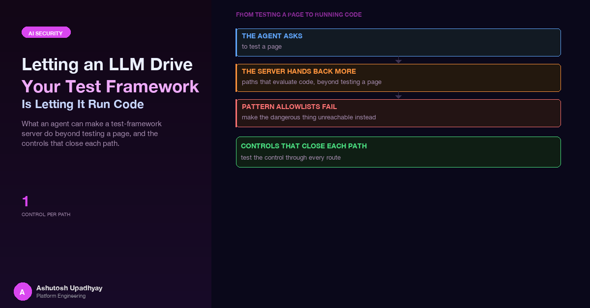

What an agent can make a test-framework MCP server do beyond testing a page, from reading the public rf-mcp source (as of 0.36.0) and Robot Framework documentation, and the controls that close each path.
The question on the table was a reasonable one: could an AI agent author UI tests for us through an MCP server for Robot Framework? The agent would look at a page, try a keyword, see what happened, and keep the steps that worked until a runnable suite fell out. The public rf-mcp project does exactly that, and it is a well-built tool for the job it was designed for: a developer at a laptop, pairing with a model, on their own machine.
Before putting something like that behind an agent, I read the server's source and the Robot Framework user guide with one question in mind: what can the model make this process do that has nothing to do with testing a web page? Everything below is from that reading, as of rf-mcp 0.36.0. None of it is a bug report. These are documented capabilities, working as designed, and they are the reason a test framework is a good thing to give an agent. They are also the reason it is not a thing to hand over unchanged.
The core point. A test framework exists to execute arbitrary instructions about a system under test. When the author of those instructions is an LLM reading untrusted page content, "author a test" and "run code in the framework's process" are the same sentence. The controls belong around the framework, in code, not in the prompt.
An MCP server for a test framework is a thin, friendly layer over the framework's own engine. As of rf-mcp 0.36.0 the surface an agent sees includes, among others:
execute_step, which runs one keyword in a live session. It also has a mode parameter: "keyword" by default, or "evaluate", which the tool's own docstring describes as running BuiltIn.Evaluate on a caller-supplied expression.execute_flow and execute_batch, which run structured if/for/try blocks and multi-step batches. For if, the implementation evaluates the condition string through the same Evaluate keyword and branches on the truthy result.manage_session, whose documented actions include import_library, import_resource, set_variables and import_variables (the last loads a Python variable file).analyze_scenario, the "front door" that creates a session from a natural-language scenario and configures libraries. Session profiles in the source are keyed on scenario patterns; the system-testing profile lists OperatingSystem and Process among its core libraries.get_session_state, a debugging aid. If the caller names no sections, it returns summary, page_source and variables, and the variables payload returns plain strings and numbers as they are.run_test_suite, which validates or executes a suite. Its mode defaults to "full", it accepts a suite_file_path to an existing .robot file, and its execution_options are forwarded to Robot. In full mode that executes any suite file at the given path with caller-supplied variables (plus tags and log level). In dry/validate mode the forwarded options also include pythonpath, and a Robot dry run still imports the libraries a suite names.build_test_suite, which turns the steps that actually executed into a .robot file.Read that list as a developer and it is a productive tool. Read it as a threat model and each line is a different way to get an interpreter to do something the author of the suite did not intend. Importantly, none of those paths needs a clever exploit. Each is an ordinary parameter of an ordinary tool.
The MCP layer is only half of the surface. The framework's own language has several places where text becomes code, all documented in the user guide and the standard library docs. An agent that can submit a keyword name and arguments can reach every one of them.
# 1. Evaluate runs a Python expression
Evaluate 1 + 1
# 2. Inline Python evaluation inside any argument
Log ${{ [x * 2 for x in range(3)] }}
# 3. Extended variable syntax: attribute access and method calls on a variable
Log ${SOME_OBJECT.method()}
# 4. Environment variables are one syntax away
Log %{HOME}
# 5. Keywords that take an expression or another keyword's name
Should Be True len('${NAME}') > 3
Run Keyword If ${FLAG} Some Other Keyword
Run Keyword Evaluate 1 + 1
Wait Until Keyword Succeeds 3x 1s Some Keyword
# 6. Libraries that touch the host
OperatingSystem.Create File ${PATH} some text
Process.Run Process ${COMMAND} shell=True
# 7. JavaScript through SeleniumLibrary
Execute Javascript return document.cookie
Click Element dom:document.forms[0].elements[0]
A few of these deserve a sentence each, because they are the ones people forget.
Should Be True and its relatives take an expression string and evaluate it as Python. They read like assertions, so they pass any reviewer who is scanning for "dangerous-looking" names.Run Keyword family (Run Keyword If, Run Keyword And Ignore Error, Wait Until Keyword Succeeds and others) takes another keyword's name as an argument. A check that inspects only the outer keyword name never sees the inner one.${x.attr} and method calls on a variable are resolved through Python attribute access.dom: locator strategy is documented as evaluating JavaScript to find an element, so a "locator" can be a script.Input Text logs the typed value at INFO level. Its documentation points to Input Password as the variant that does not log it.The takeaway is not "avoid these keywords". They are the framework. The takeaway is that the list of keywords an agent may call is a security boundary, and it has to be drawn with that in mind.
The first instinct is a pattern allowlist: let anything that looks like a UI action through. Click *, Wait Until *, * Should *. It is quick to write, it reads well in review, and it is wrong for three reasons.
The wildcards match the wrong things. Wait Until * matches Wait Until Keyword Succeeds, which runs any keyword. * Should * matches Should Be True, which evaluates Python. A pattern chosen for the harmless majority admits the dangerous few by construction.
Names are not canonical. Robot Framework keyword names are case-insensitive and ignore spaces and underscores, so these all resolve to the same keyword:
Should Be True
should_be_true
SHOULDBETRUE
BuiltIn.Should Be True
builtin.should_be_trueA denylist that compares strings, or a pattern that assumes spaces, is bypassed by retyping. The comparison must happen after the same normalisation the framework applies.
The danger is in the arguments as well as the name. A perfectly allowed keyword becomes an interpreter the moment one argument is ${{...}}, a variable with a method call, or an environment lookup. Checking only the keyword name checks half of the call.
This is the same shape of mistake as the one in the earlier post on agent security: a capability you did not mean to grant, reachable because a broader grant covered it. The rule from there carries over unchanged. If a tool is not one you will authorise, do not bind it at all.
The pattern that follows from the reading is to shrink the surface with code, in layers, so that no single layer is load-bearing. These are the controls I would put in front of any test-framework MCP server before an LLM drives it.
Every fact in this post is "as of rf-mcp 0.36.0". A tool surface that changes between minor releases (new modes, new tools, new defaults) invalidates an allowlist silently. Pin the exact version, and make a bump a change that has to re-answer the review question: what did this release add that an agent can now call?
The cheapest control is the one that cannot be misconfigured: the tool is not registered. For an authoring agent whose job is to try keywords and keep the ones that work, the candidates for removal are the ones that evaluate conditions, change the session's library set, or run whole suites:
execute_flow and execute_batch (conditions go through Evaluate; batches multiply the keyword calls you must vet),manage_session (library, resource and variable-file imports),analyze_scenario (it configures a session's libraries from free text),run_test_suite (default full, arbitrary file path, forwarded Robot options),Register only these four: discover keywords, execute one allowed keyword, read a redacted state, and build the suite file. Everything else is removed.
The model should never choose which libraries exist. The host creates the session at startup with a fixed library list (for a browser-authoring agent: SeleniumLibrary, plus a narrow set of data helpers) and a fixed variable set. A session profile that lists OperatingSystem and Process among its core libraries is a capability that free text could select. Make that impossible by never offering the option.
Replace patterns with a dictionary of exact canonical names, each with a validator for its arguments. Compare after Robot's own normalisation, and reject anything with a library prefix that is not on the list.
import re
def canonical(name: str) -> str:
# Robot Framework ignores case, spaces and underscores in keyword names.
return name.lower().replace(" ", "").replace("_", "")
ALLOWED = {canonical(n) for n in (
"Click Element", "Input Text", # Input Text: non-secret fields only
"Get Text", "Wait Until Element Is Visible",
"Sign In As", # vetted wrapper, see below
)}
DECLARED_VARS = {"BASE_URL"} # the only variables an argument may mention
VAR = re.compile(r"[$@&%]\{([^}]*)") # any variable-like opener
def check_call(keyword: str, args: list[str]) -> None:
key = canonical(keyword)
if "." in key: # Library.Keyword form: never allowed
raise PermissionError(f"qualified name not allowed: {keyword!r}")
if key not in ALLOWED:
raise PermissionError(f"keyword not allowed: {keyword!r}")
for a in args:
for m in VAR.finditer(a):
if m.group(1) not in DECLARED_VARS: # blocks ${{...}}, ${x.attr}, %{ENV}, @{...}
raise PermissionError(f"variable syntax not allowed: {a!r}")
Three details matter. The allowlist is a set of exact names, so adding Wait Until Element Is Visible does not admit Wait Until Keyword Succeeds. The variable check rejects every variable-looking opener whose body is not on a short declared list, which covers inline Python, extended syntax and environment lookups in one rule without trying to enumerate them. And the check runs in the host process before the call is forwarded, never inside a prompt.
Locators are strings the model composes from page content, and some strategies run script. Allow a small set of strategies, reject any locator body that contains variable syntax, and allow nothing else:
LOCATOR = re.compile(r"^(css|xpath|id|name):(?!.*[$@&%]\{)[^\\]+$")
def check_locator(loc: str) -> None:
if not LOCATOR.match(loc):
raise PermissionError(f"locator not allowed: {loc!r}")
This rejects dom:, script-backed strategies, and any locator that smuggles in variable syntax. Combined with the exact-name list (which has no Execute Javascript), the page can no longer run script on the agent's behalf.
State inspection is where secrets leak: a session variable set for a login, a page source with a token in it. A regular expression over the serialised JSON fails on the first escaped quote or backslash in a secret. Redact the parsed structure instead, walking it and replacing both sensitive keys and any known secret value:
SENSITIVE_KEYS = {"variables", "cookies", "headers"}
def redact(node, secrets: set[str]):
if isinstance(node, dict):
return {k: "***" if k in SENSITIVE_KEYS else redact(v, secrets)
for k, v in node.items()}
if isinstance(node, list):
return [redact(v, secrets) for v in node]
if isinstance(node, str):
for s in secrets:
node = node.replace(s, "***")
return node
Even better, never request the sensitive sections at all: force the sections argument of the state tool to exclude variables, then redact whatever else comes back as a second layer.
An agent testing a login page needs the page to receive a username and password. It does not need to see them. Write one keyword, in your own small library, that takes a role name, reads the credential from the host's secret store, and types it through the WebDriver API so nothing passes through Robot's keyword log:
from robot.api.deco import keyword, library
from robot.libraries.BuiltIn import BuiltIn
@library(scope="GLOBAL")
class SignIn:
def __init__(self, secret_source):
self._secrets = secret_source # injected by the host, never by the model
@keyword
def sign_in_as(self, role: str):
cred = self._secrets[role] # unknown role raises, no fallback
driver = BuiltIn().get_library_instance("SeleniumLibrary").driver
driver.find_element("css selector", "#username").send_keys(cred.user)
driver.find_element("css selector", "#password").send_keys(cred.password)
driver.find_element("css selector", "button[type=submit]").click()
The only argument the model controls is a role name. The selectors belong to the library, the secret never enters the model's context, and the keyword's logged arguments contain nothing sensitive. Pair it with redaction from step 6 so that a stray page source or state call cannot echo the value back.
Here is the whole reading in one table. Each row is a documented capability, why it matters when an LLM is the caller, and the control that closes it.
| Feature or keyword | Why it is dangerous with an LLM caller | Control |
|---|---|---|
execute_step with mode="evaluate"; Evaluate |
Runs a caller-supplied Python expression in the server process | Do not expose evaluate mode; Evaluate absent from the exact-name list |
execute_flow / execute_batch conditions |
Condition strings are evaluated as Python; nesting multiplies calls past a per-call check | Remove the tools; control flow lives in vetted keywords |
Should Be True, Run Keyword If, Set Variable If, IF/WHILE |
Read like assertions or control flow, but evaluate expressions | Exact-name list; provide narrow assertion keywords instead |
Run Keyword, Wait Until Keyword Succeeds |
Take another keyword's name as an argument, hiding the real call | Not on the list; never match by prefix |
${{...}}, ${x.attr}, %{ENV} |
Turn an argument into inline Python, attribute or method access, or an environment read | Reject variable syntax outside a short declared set |
manage_session import actions; profiles that load OperatingSystem and Process |
Pulls in file, shell and arbitrary-module capability, or loads a Python variable file | Create the session from code with a fixed library list; remove the tool |
run_test_suite (default full, suite_file_path, forwarded options) |
Full mode executes any suite file with caller-supplied variables; dry/validate mode also forwards pythonpath, and a dry run still imports libraries |
Remove it; run only host-generated suites from a host-owned path |
get_session_state variables section |
Returns variable values as plain strings, including any secret you set | Force the section list; redact on the parsed JSON |
dom: and other script-backed locators; Execute Javascript |
Page content steers the model into running script in the browser | Literal css/xpath/id/name locators only |
| Keyword precedence (suite and resource over library) | A same-named keyword can replace the one you vetted | Fixed resources only; nothing the agent writes is imported |
Input Text logging |
Typed values reach the log file at INFO level | Credentials only via a vetted keyword that types through the driver |
| Unpinned server version | New tools and defaults appear without review | Pin exactly; a bump is a review |
Defence in depth is not decoration here. Each control above assumes another might be wrong. If the exact-name list has a mistake, the variable check still blocks the argument form. If a tool you removed is re-added by an upgrade, pinning stops the upgrade. If a secret reaches a result, redaction removes it. No single layer needs to be perfect, but each one needs to be a real wall rather than a request.
Write one refusal test per route to each capability, not per named risk. The headline risk is evaluate mode, but the same expression is reachable by calling the Evaluate keyword in normal keyword mode, by Run Keyword wrapping it, by Should Be True, or by ${{...}} in an argument of an allowed keyword. A test that only passes mode="evaluate" exercises one of those routes.
The table of routes drives the tests:
import pytest
ROUTES = [
("Evaluate", ["1+1"]),
("evaluate", ["1+1"]), # case
("EVALUATE", ["1+1"]),
("Run Keyword", ["Evaluate", "1+1"]), # name as argument
("Should Be True", ["1 == 1"]), # expression
("Click Element", ["css:#a", "${{ 1+1 }}"]), # allowed name, bad arg
("Get Text", ["%{HOME}"]), # env lookup
("BuiltIn.Evaluate", ["1+1"]), # qualified
]
@pytest.mark.parametrize("keyword,args", ROUTES)
def test_every_route_is_refused(keyword, args):
with pytest.raises(PermissionError):
check_call(keyword, args)
def test_a_known_good_call_is_accepted(): # positive control
check_call("Click Element", ["css:#submit"])
Note the last test. A guard that rejects everything also "passes" every negative test, so every suite of denials needs a positive control that proves the guard still lets the right thing through. The wider lesson, that a green suite can be unable to fail, is the subject of the post on hollow tests.
Test the capability, not the name you thought of. For each capability you removed (run Python, read a file, start a process, read the environment, run script in a page) enumerate the routes the framework offers to reach it, and put each route in the table. When a new route appears in a later release, the failing test tells you before an agent does.
The exact-name list guards the live session, but the end product of an authoring agent is a .robot file that someone will run later, often in a different place with different privileges. The same allowlist that gates the live keyword calls can gate the file: parse the generated suite with Robot's own parser, walk every keyword call and argument, and apply the identical check_call, locator and variable rules before the file is accepted into a repository or a pipeline. A custom Robocop rule is a natural home for it, so the check also runs on hand-written changes.
That turns the allowlist into a single reviewed specification used in three places: at the MCP boundary while the agent works, at commit time on the generated file, and in CI on everything else. The agent can still draft freely, but nothing it drafted becomes executable without passing the same gate a person's change would.
Wait Until Keyword Succeeds and Should Be True, names are not canonical (case, spaces, underscores), and the arguments are as dangerous as the name. Use exact names, matched after the framework's own normalisation.Disclaimer: The views and opinions expressed in this post are my own and do not represent those of my employer or any organisation I am associated with.